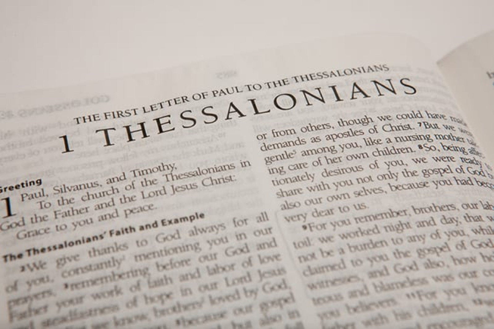

09.06.24 - No Appearance of Evil Rev Ko Ling Kang
02.06.24 - Prove All Things Rev Ko Ling Kang
26th May 24 - Despise Not Prophesying Rev Ko Ling Kang
19th May 24 - Quench not the Spirit Rev Ko Ling Kang
12th May 24 - In Everything Give Thanks Rev Ko Ling Kang